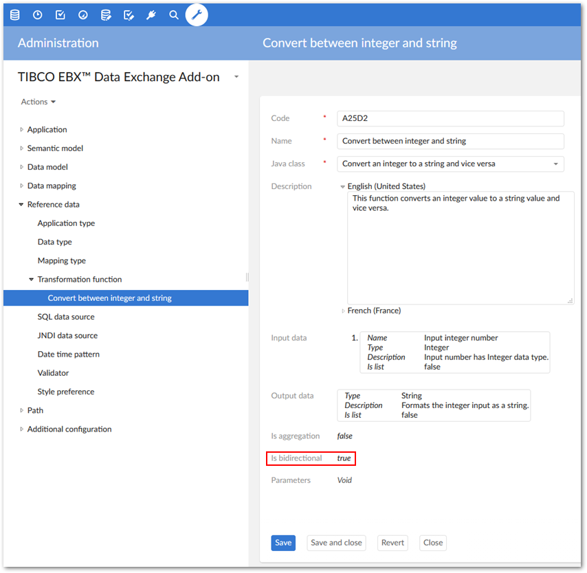

When the data transfer relies on a user-defined data mapping, the add-on can ensure bidirectional execution. This means that when a mapping from table A to table B exists, you can also transfer from B to A. This execution depends on the transformation functions used for transferring the data. Indeed, the Is bidirectional property must be activated.
The bidirectional mode is activated automatically when the data types of the source and target fields are the same and the Direct mapping type is used.
Fields are ignored during the reverse transfer when they are not associated with the Is bidirectional option.
